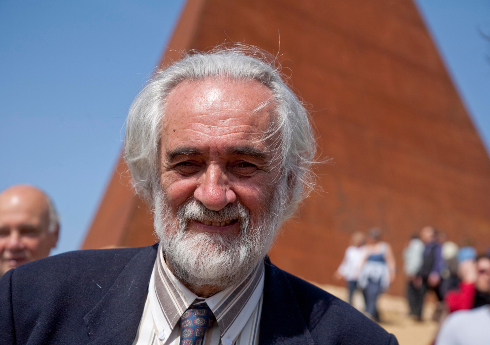

Mauro Staccioli
Nasce a Volterra nel 1937 e si diploma presso il locale Istituto Statale d'Arte nel 1954. Collocatosi dapprima nel campo della pittura e dell'incisione, a partire dal 1968 Staccioli si concentra tutto sulla scultura. A partire da questa forte opzione, egli formula la sua personale concezione ambientale dell'opera scultorea, chiamata ad interagire con lo spazio fisico della sua destinazione, per il quale essa stessa è pensata.
Le grandi installazioni in ferro e poi in cemento realizzate nel corso degli anni Settanta a Milano, a Volterra, a Grenoble, a Parma ed infine a Venezia (37esima e 38esima Biennali) rappresentano gli esiti più conseguenti di questa concezione, segnati dall’interazione spazio-uomo. Interazione è del resto una parola-chiave della ricerca artistica di Staccioli, esprimendo non soltanto una circolarità di relazioni di senso fra l'opera e l'ambiente, ma anche una chiara allusione al rapporto uomo-ambiente.
Gli anni ottanta sono quelli che vedono la consacrazione di Staccioli come artista di levatura internazionale. Grandi installazioni in cemento inaugurano una nuova fase della ricerca artistica, che tende a mitigare una certa aggressività visiva dei suoi esordi e che, d'ora in poi, sarà caratterizzata da una più ardita concezione progettuale che sembra sfidare gli equilibri statici dell'opera e le armonie architettoniche o naturali del contesto.
Nel 1987, il Museum of Contemporary Arts di La Jolla, San Diego, California, gli dedica la prima personale americana. Sempre nel 1987 è chiamato a Seul con l'incarico di realizzare una scultura permanente per il parco olimpico; da qui inizia anche un'attiva frequentazione della Corea del Sud per conferenze nelle università, progetti di installazioni e mostre personali. Nello stesso anno, il Comune di Milano gli dedica la prima importante personale alla Rotonda della Besana.
Tra le realizzazioni più significative della fine degli anni ’90 vi è l'installazione per il Symposium Internazionale di Scultura di Andorra, con un grande cerchio in acciaio rosso alto 12 metri sul fianco di un monte a Ordino d'Arcalis. Le opere degli anni ’90 rappresentano una fase artistica più complessa, in cui le componenti politiche si allentano a favore di temi esistenziali, sempre legati alla presenza dell'uomo nel mondo e al suo rapporto con l'ambiente.